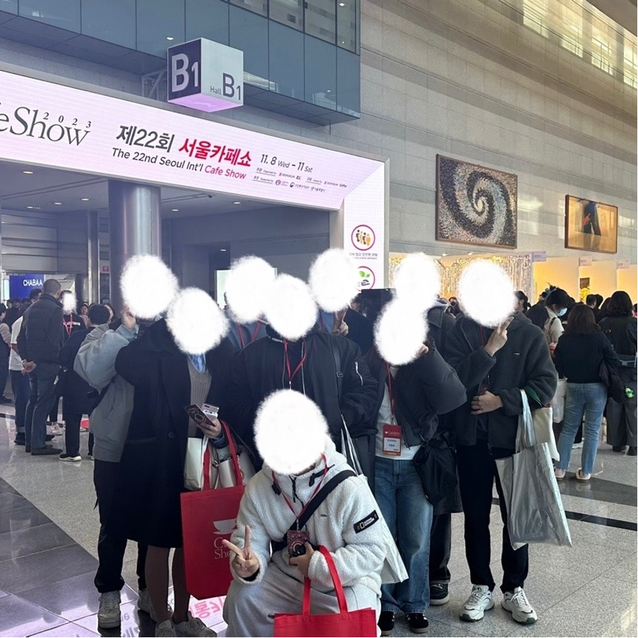
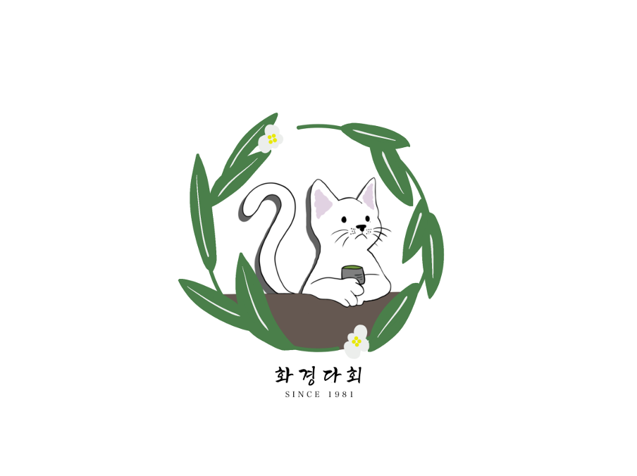

음료를 좋아하는 어스인
▶ 에스프레시보 ◀

단국대학교 중앙동아리 에스프레시보(Espres'sivo)입니다
커피를 주제로 이와 관련된 여러 행사를 기획하고 실행하고 있습니다. 매 학기 수도권에 있는 카페를 선택하여 카페 투어를 진행하고 있으며, 이를 통해 다양한 커피 맛을 보는 것을 목표로 하고 있습니다. 중간고사, 기말고사에는 커피를 만들어 학우들에게 나누어주는 행사도 진행하고 있습니다. 2학기에 개최되는 카페쇼에 참여하여 다양한 원두, 디저트, 새로운 음료를 접하는 기회도 가지고 있습니다.
바쁜 학교 생활 중에 동아리 방에 잠시 들려 음료를 가져가셔도 되고, 동아리 방에서 휴식을 취하며 다른 학우들과 친해지는 시간을 가지기도 합니다. 시즌별로 준비하는 스페셜 음료까지, 에스프레시보와 함께 해봐요!
▶ 화경다회 ◀
